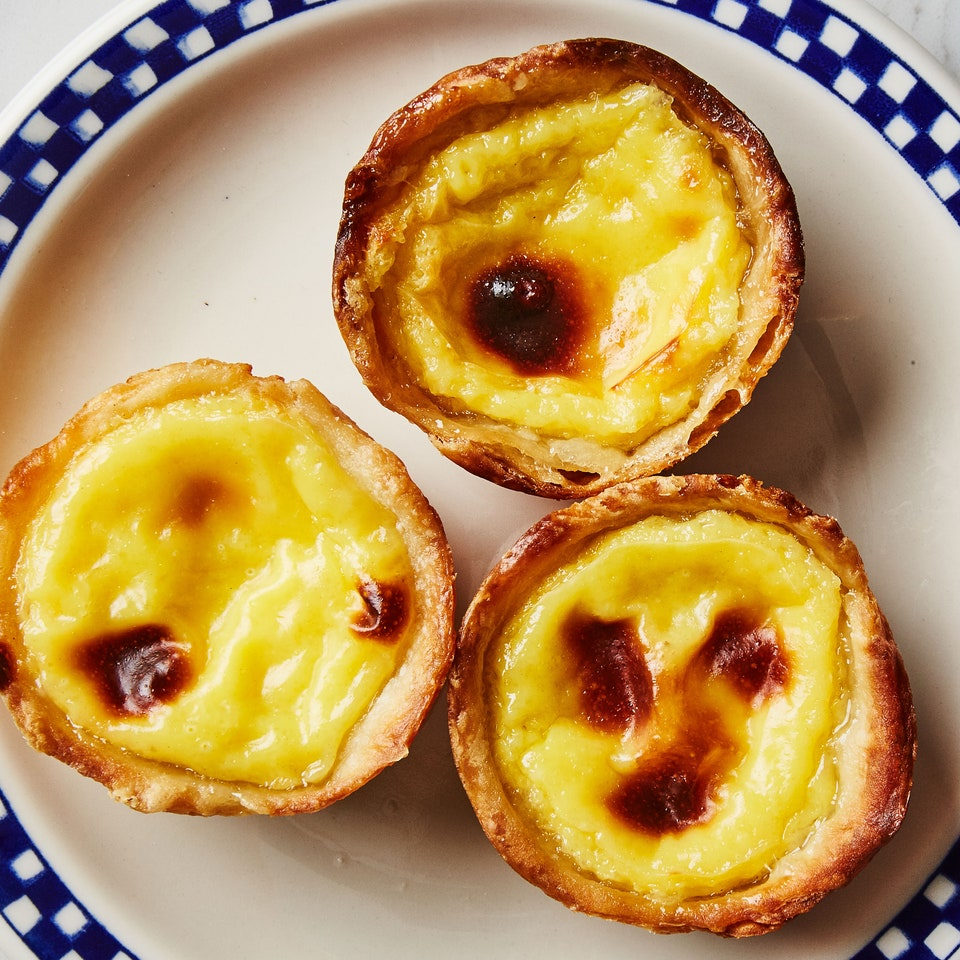

Egg Tart

Growing up, one of my most favourite food to eat was egg tart. Every chance I could get, I would purchase an egg tart. It reminds me of the time when my Dad and I went around hong kong.
Ingredients
Dough
- 1/2 teaspoon kosher salt
- 1 Cup all-purpose flour, plus more for dusting
- 1/2 cup (1 stick) unsalted butter, softened
Filling and assembly
- 1 lemon
- 1 3-4 inch cinnamon stick
- 3/4 cup sugar
- 1/3 cup all-purpose flour
- 1/8th teaspoon kosher salt
- 1 1/2 cups whole milk, divided
- 6 large egg yolks
- 1 teaspoon vanilla extract
Special Equipment
- A candy Thermometer
Instructions
- Step 1
Using your hands, mix salt, 1 cup flour, and ½ cup water in a large bowl until a shaggy dough forms. Knead until dough is elastic but still very sticky, about 5 minutes (alternatively, beat on medium speed in a stand mixer fitted with the paddle attachment until dough pulls away from sides of bowl, about 3 minutes). Wrap in plastic and let sit 30 minutes to relax gluten.
- Step 2
Make sure your butter is softened to the consistency of sour cream (you can put it in a bowl and give it a stir). Generously flour (really, use a lot of flour) a clean work surface. Place dough on surface and dust with flour; lightly coat rolling pin with flour. Roll dough out to a 12" square (it will be quite thin), flouring surface as needed to prevent dough from sticking.
- Step 3
Brush excess flour off dough. Imagine dough is made up of 3 equal columns. Using a small rubber spatula, spread 2½ Tbsp. butter over the left and center columns, leaving a ½" border around the edges (it should look like a slice of toast that’s been buttered on the left two-thirds). Lift up the right, unbuttered column and fold it over the middle column, then fold the far left column over the middle, as though you were folding a letter into thirds. Rotate dough 90° counterclockwise; the sides and top edge will be open.
- Step 4
Generously flour work surface and dough. Roll out again to a 12" square. Repeat buttering and folding process. Again rotate folded dough 90° counterclockwise, flouring surface as needed. Roll dough out a third time to a 12" square (it’s worth it; we promise!). Spread remaining butter over surface of dough, leaving a ½" border. Starting with the long side closest to you, tease up edge of dough with a bench scraper and tightly roll it away from you into a log, brushing excess flour from the underside as you go. This dough is very forgiving—if there are any small holes, don't worry about it. When you get to the end, wet edge of dough just before you roll it so that it sticks. Trim both ends to clean up the edges, cut log in half crosswise, then wrap both pieces in plastic wrap (you should have two 6" logs). Chill 1 log at least 3 hours; transfer remaining log to freezer for another use (this amount of dough makes enough for 24 tarts; freeze the extras for your future crispy tart needs).
- Step 5
Do Ahead: Dough can be made 1 day ahead; keep chilled, or freeze up to 3 months.
Filling and Assembly
- Step 6
Peel zest from one half of lemon into wide strips with a vegetable peeler, leaving white pith behind; set aside. Bring cinnamon, sugar, and ¼ cup water to a boil in a small saucepan fitted with candy thermometer over medium-high heat. Cook, swirling pan occasionally, until thermometer registers 225°. Remove from heat and stir in reserved lemon peel. Let sugar syrup sit 30 minutes.
- Step 7
Position a rack in top third of oven; preheat to 500°. Place a rimmed baking sheet in oven to heat.
- Step 8
Whisk flour, salt, and ½ cup milk in a medium bowl until combined and no lumps remain. Heat remaining 1 cup milk in a large saucepan over medium-high until it begins to boil, about 5 minutes. Remove from heat and whisk into flour mixture. Return mixture to saucepan over medium heat and cook, stirring occasionally, until thick, creamy, and smooth, about 5 minutes.
- Step 9
Strain sugar syrup through a fine-mesh sieve into hot milk mixture and whisk to combine. Whisk in egg yolks and vanilla.
- Step 10
Cut chilled dough crosswise into twelve ½"-thick slices. Place 8 slices on a plate and chill; place remaining 4 dough slices in 4 cups of a standard 12-cup muffin pan. Using your thumb, firmly press the center each piece against bottom of cup, forming a wall of dough around your thumb. Using your thumbs and fingers, press edges of dough against sides of cup, turning pan as you go, until dough comes halfway up sides of cup and is about 1/16" thick (or as thin as you can get it). Repeat twice more with remaining dough slices.
- Step 11
Fill each pastry shell with about 2 Tbsp. filling (it should come about three-fourths of the way up the sides). Try not to get any on the pan itself; it may burn and stick during baking.
- Step 12
Carefully place muffin pan on heated baking sheet in oven and bake tarts until custard is slightly puffed and browned in spots, and crust is golden brown and bubbles of melted butter are popping around it, 14–16 minutes. Let cool 10 minutes in pan, then carefully transfer each tart to a wire rack with an offset spatula. Let cool 20 minutes before serving.